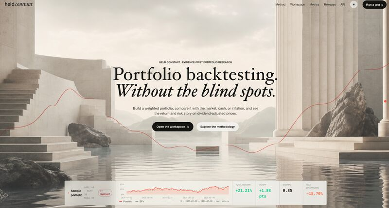

Held Constant · Portfolio Backtesting Without Blind Spots
Jul 2026
PythonFastAPISQLAlchemy
PostgreSQLyfinanceChart.js
Backtesting
Details
Research application for building weighted portfolios, retrieving dividend adjusted historical prices, and comparing results against market, gold, bond, savings, or inflation benchmarks. It supports buy and hold strategies plus monthly, quarterly, and annual rebalancing.
The engine models transaction costs, reports risk and attribution metrics, and uses a moving block bootstrap for confidence intervals. A 52 test suite checks metric calculations, invariants, benchmark compounding, data ingestion, and API behavior.